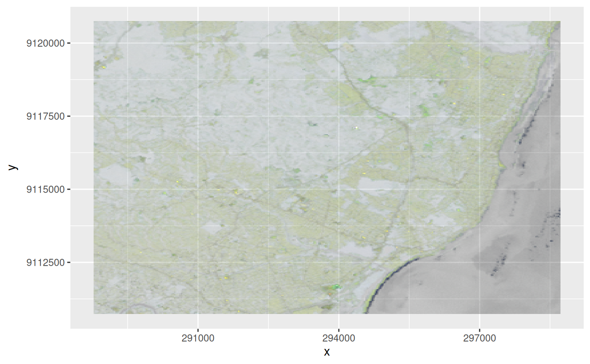

reduce dimension to rgb (alpha) hex values
Arguments
- x
object of class
stars- dimension
dimension name or number to reduce
- use_alpha
logical; if TRUE, the fourth band will be used as alpha values
- maxColorValue
integer; maximum value for colors
- probs
probability values for quantiles used for stretching by "percent".
- stretch
logical or character; if
TRUEor"percent", each band is stretched to 0 ... maxColorValue by "percent clip" method using probs values. If"histogram", a "histogram equalization" is performed (probsvalues are ignored). If stretch isNULLorFALSE, no stretching is performed. Other character values are interpreted as "percent" and a message will be printed.
Details
the dimension's bands are mapped to red, green, blue, alpha; if a different
ordering is wanted, use [.stars to reorder a dimension, see examples.
Alternatively, you can use plot.stars with the rgb argument to create a three-band composition.
Examples
tif = system.file("tif/L7_ETMs.tif", package = "stars")
x = read_stars(tif)
st_rgb(x[,,,3:1])
#> stars object with 2 dimensions and 1 attribute
#> attribute(s):
#> L7_ETMs.tif
#> Length:122848
#> Class :character
#> Mode :character
#> dimension(s):
#> from to offset delta refsys point x/y
#> x 1 349 288776 28.5 SIRGAS 2000 / UTM zone 25S FALSE [x]
#> y 1 352 9120761 -28.5 SIRGAS 2000 / UTM zone 25S FALSE [y]
r = st_rgb(x[,,,c(6,5,4,3)], 3, use_alpha=TRUE) # now R=6,G=5,B=4,alpha=3
if (require(ggplot2)) {
ggplot() + geom_stars(data = r) + scale_fill_identity()
}

r = st_rgb(x[,,,3:1],
probs = c(0.01, 0.99),
stretch = "percent")
plot(r)
#> Error in image.stars(x, ..., axes = axes, breaks = breaks, col = col, key.pos = key.pos, key.width = key.width, key.length = key.length, main = NULL): rgb plotting not supported on this device
r = st_rgb(x[,,,3:1],
probs = c(0.01, 0.99),
stretch = "histogram")
plot(r)
#> Error in image.stars(x, ..., axes = axes, breaks = breaks, col = col, key.pos = key.pos, key.width = key.width, key.length = key.length, main = NULL): rgb plotting not supported on this device